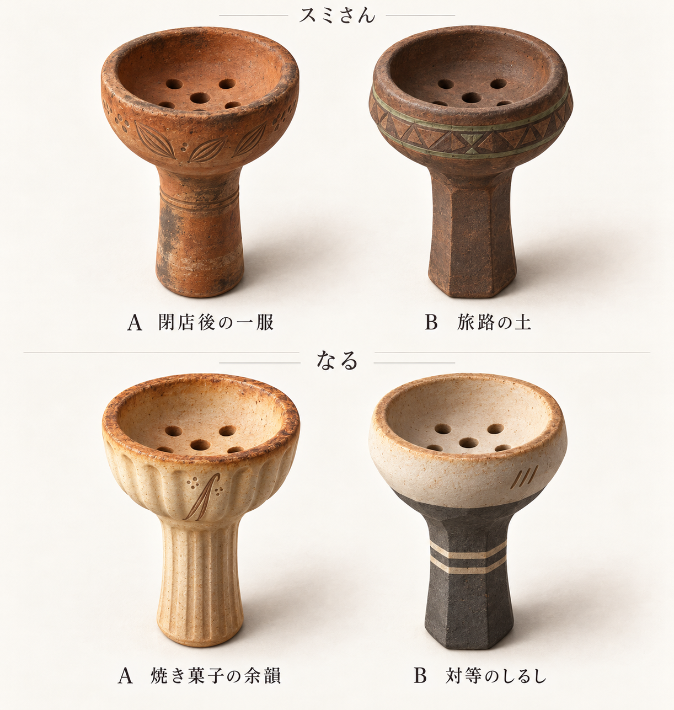
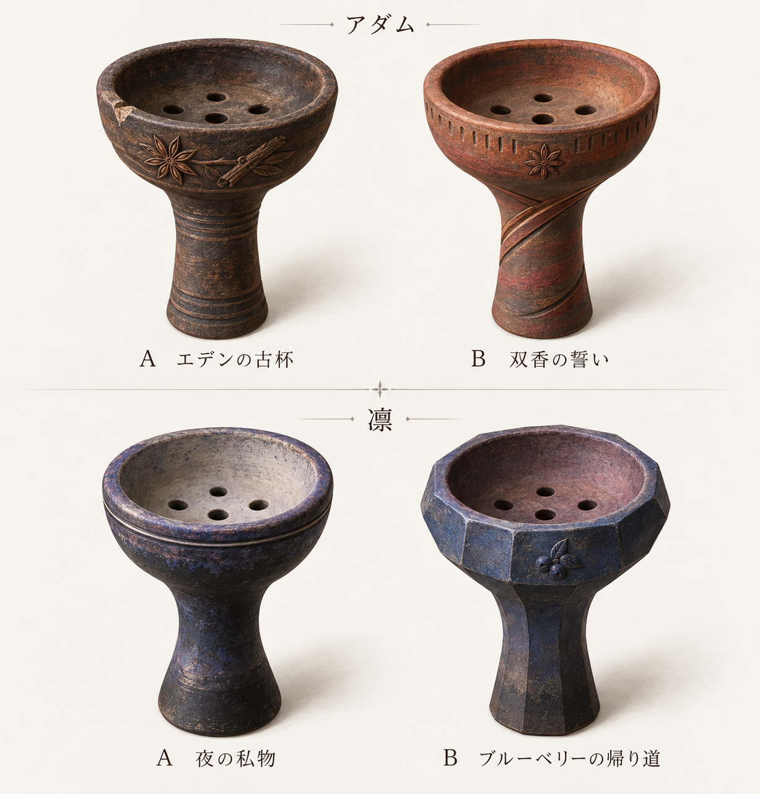
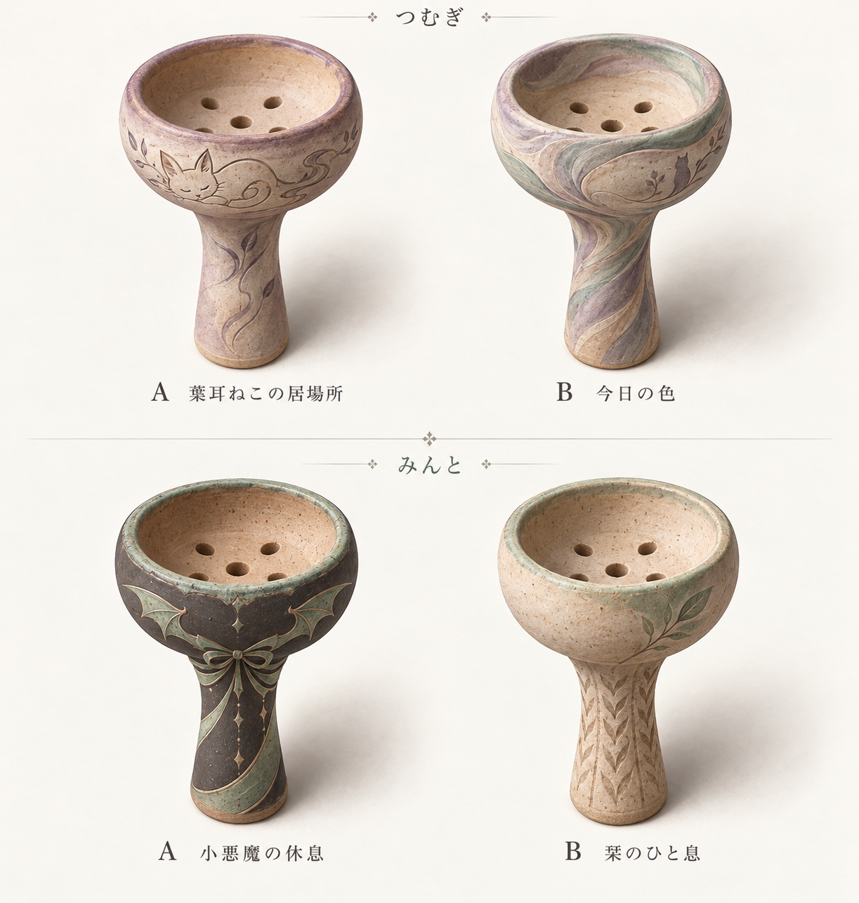
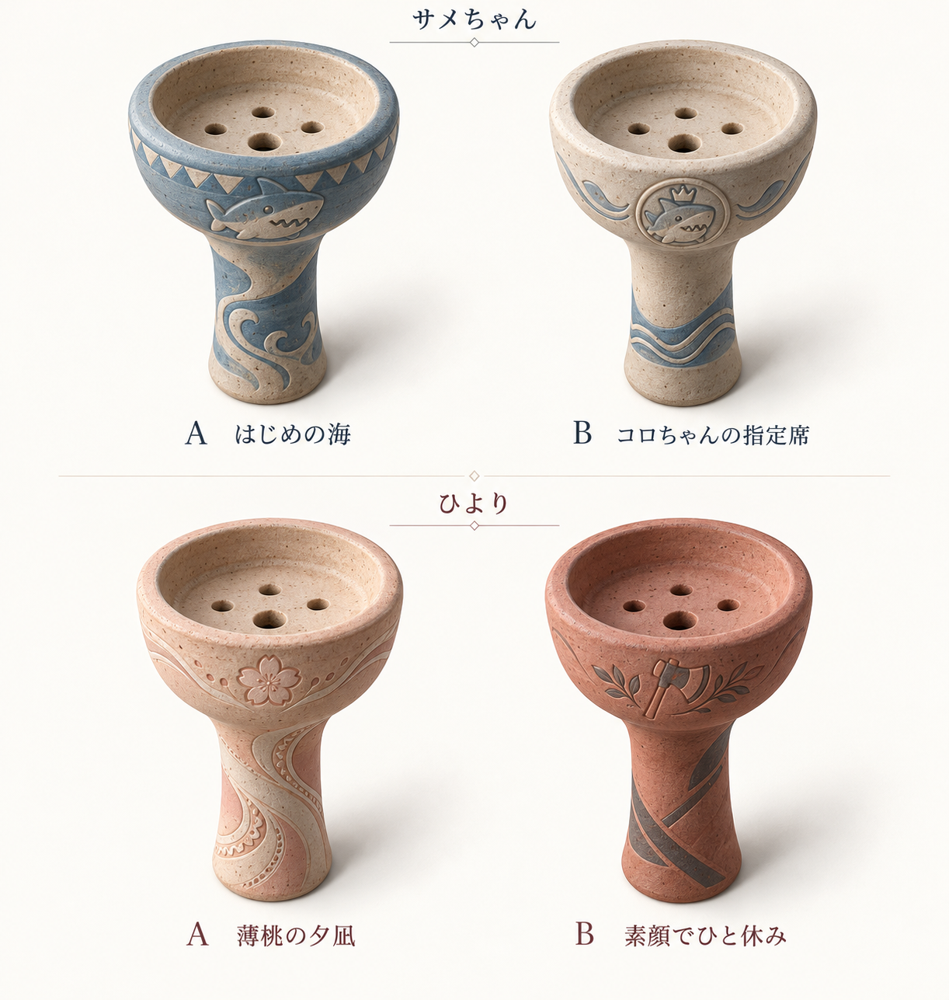

最初のシンプル版（v1）から8人のデザインを選定済み。各キャラの左がA、右がBです。画像は拡大して確認できます。
基本性能は通常のハガルと同等。得意フレーバー時だけ小さなボーナスを付ける方針で、内容・数値は今後決めます。
採用：スミさん：A「閉店後の一服」／なる：B「対等のしるし」
左：A案 ／ 右：B案

採用：アダム：B「双香の誓い」／凛：A「夜の私物」

採用：つむぎ：B「今日の色」／みんと：B「栞のひと息」

採用：サメちゃん：B「コロちゃんの指定席」／ひより：B「素顔でひと休み」
